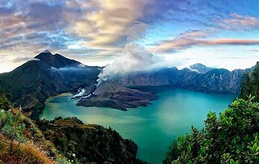

Gunung Rinjani adalah gunung yang berlokasi di Pulau Lombok, Nusa Tenggara Barat. Gunung yang merupakan gunung berapi kedua tertinggi di Indonesia dengan ketinggian 3.726 mdpl serta terletak pada lintang 8º25' LS dan 116º28' BT ini merupakan gunung favorit bagi pendaki Indonesia karena keindahan pemandangannya. Gunung ini merupakan bagian dari Taman Nasional Gunung Rinjani yang memiliki luas sekitar 41.330 ha dan ini akan diusulkan penambahannya sehingga menjadi 76.000 ha ke arah barat dan timur.
Secara administratif gunung ini berada dalam wilayah tiga kabupaten: Lombok Timur, Lombok Tengah, dan Lombok Utara.